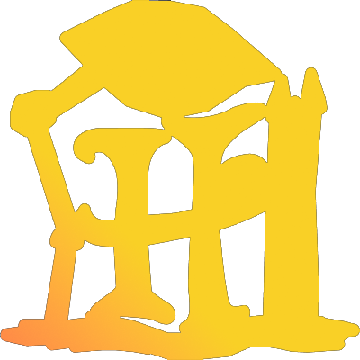

휴버대 티어표
휴버대 티어표
휴버대 티어표는 ‘휴먼버그대학교’ 시리즈의 캐릭터들의 전투력 순위 및 관련 정보를 보여주기 위한 미니 웹 사이트입니다.
휴버대 티어표는 ‘휴먼버그대학교’ 시리즈의 캐릭터들의 전투력 순위 및 관련 정보를 보여주기 위한 미니 웹 사이트입니다.
서버가 있는 환경에서 뽑을 수 있습니다.
체크 결과 · 저장되지 않음
신계 / 슈퍼 그랜드 마스터
뒷세계 전설들 / 그랜드 마스터
톱 클래스 무투파 / 마스터
준 톱클래스 무투파 / 다이아몬드
중견급 무투파 or 탈사제 / 플래티넘

6티어중하위권 무투파 or 정예 사제 / 골드
하위권 무투파 or 우수한 사제 / 실버
평범한 사제 수준의 전투력 / 브론즈
비전투원 또는 전투력 측정 단서 없음 / 언랭크